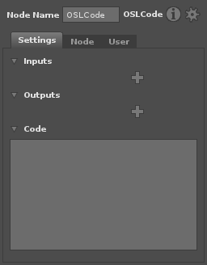
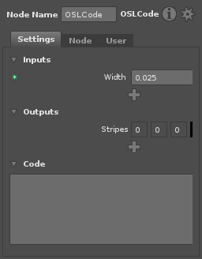
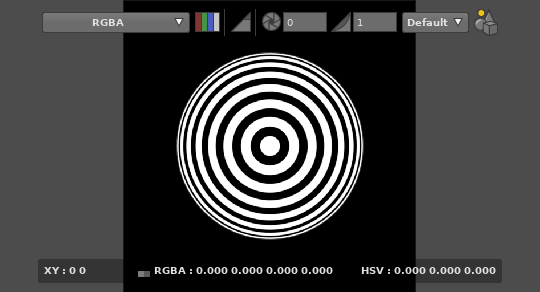
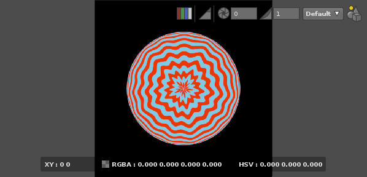

Using The OSLCode Node¶
Gaffer allows the creation of networks of predefined OSL shaders to be used in renderering and image and geometry processing, without any coding required. But sometimes the shader you want doesn’t exist, or it’s easier to express your ideas through a few lines of code. In these situations, the OSLCode node allows OSL source code to be entered directly, to create new shaders on the fly.
A one line shader¶
Start by creating an OSLCode node in the GraphEditor. With this selected, the NodeEditor will display a blank shader to be edited.

We’ll start by adding some parameters (inputs and outputs) for the shader.
- Click on the upper and choose “Float” from the menu. This creates an input parameter which takes a floating point number.
- Double click the “Input1” label that appears, and rename the parameter to
width. - Enter the value
0.025into the width field. - Click on the lower and choose “Color” from the menu. This creates an output color parameter.
- Double click the “Output1” label, and rename the parameter to “stripes”.

We can now enter any OSL code we want to generate the output from the input. Start by entering the following :
stripes = aastep( 0, sin( v * M_PI / width ) )
Now hit Control + Enter to update the shader. The Viewer will update to show a shader ball with the shader on it, and adjusting the width parameter will update the render interactively.

Tip
Enter the names for input and outputs into the code easily by dragging their labels into the code editor. This is especially useful for color spline inputs, where some special syntax is required to evaluate the spline.
Adding some more features¶
Let’s add a bit of color and some wobble to our shader, to demonstrate a few more features of OSL :
- Add a color input and rename it to
color1. - Add another color input and rename it to
color2. - Click on the colour swatches to pick some tasteful hues.
Now update the code :
float vv = v + 0.05 * pnoise( u * 20, 4 );
float m = aastep( 0, sin( vv * M_PI / width ) );
stripes = mix( color1, color2, m );
And as before, hit Control + Enter to update the shader.

No doubt you didn’t come here to learn how to make blue and red wobbly stripes, but you are now armed with the ability to add inputs and outputs, edit code and view the results interactively, so are hopefully in a position to create the shader you do want.
Tip
Explore the available functions in OSL and add them easily to the code by using the /Insert menu items from the Right Click popup menu.
OSL Resources¶
This short tutorial has only scratched the surface of what can be done with Open Shading Language. The following resources are a good place to learn more :
- The language specification (also available from the /Help/OpenShadingLanguage/Language Reference menu item in Gaffer)
- The OSL mailing list